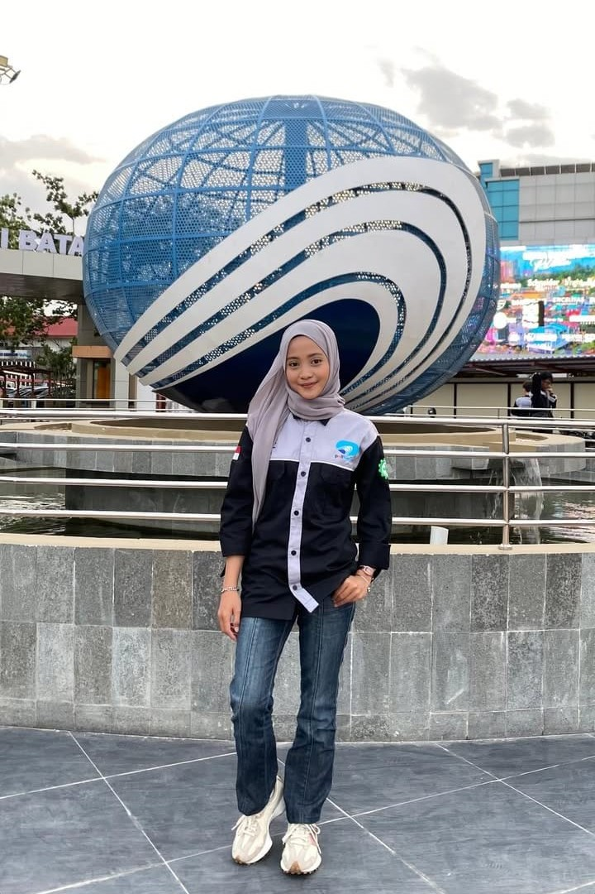
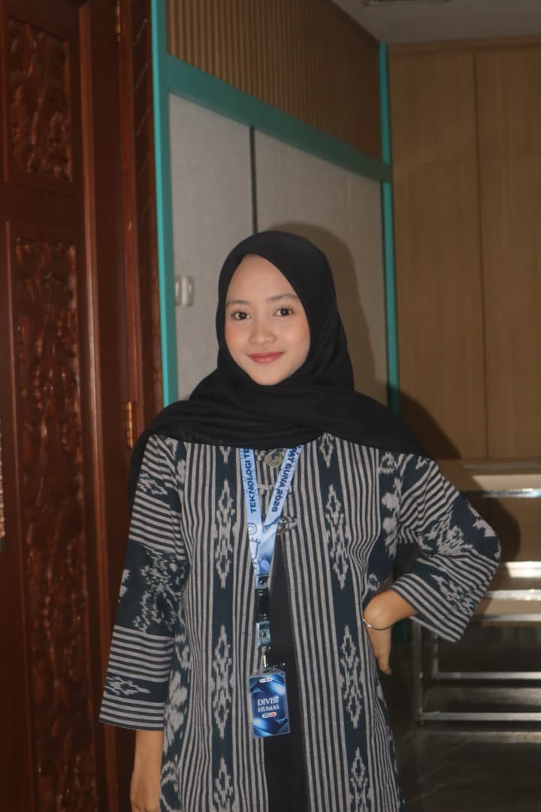
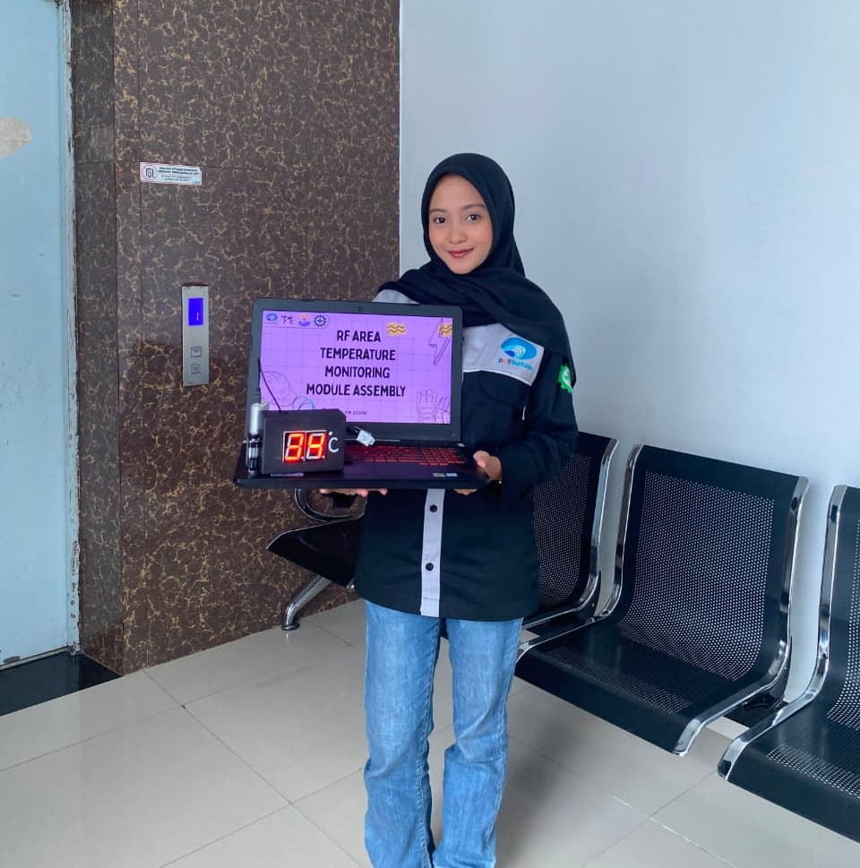
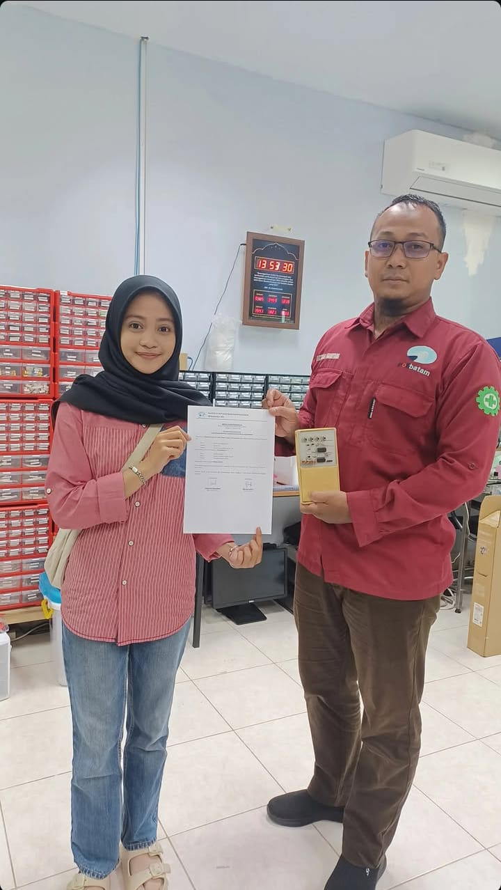
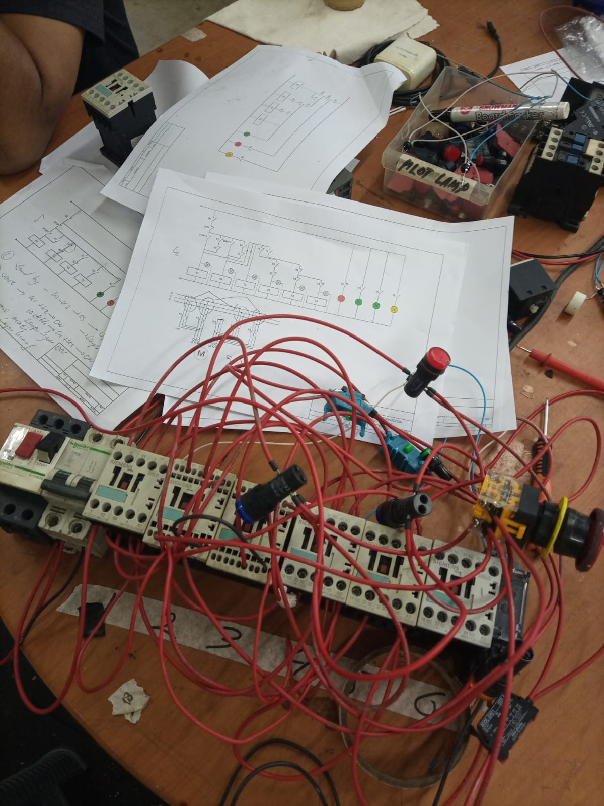
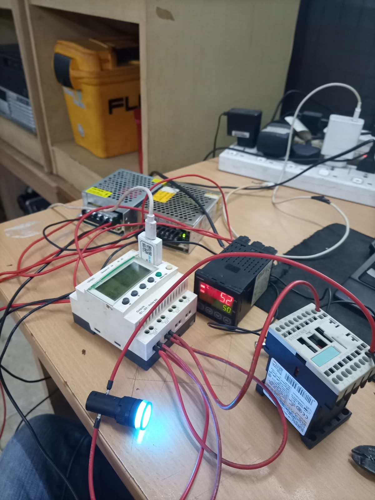
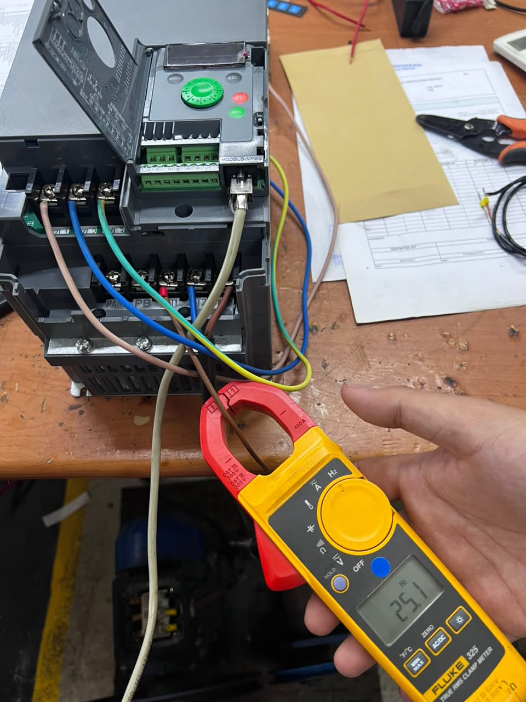
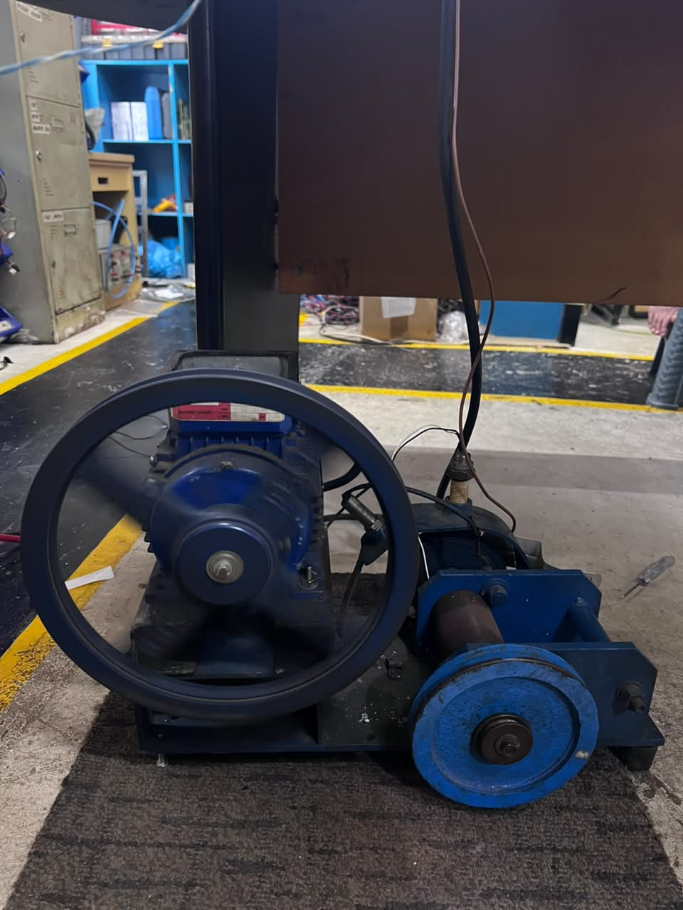
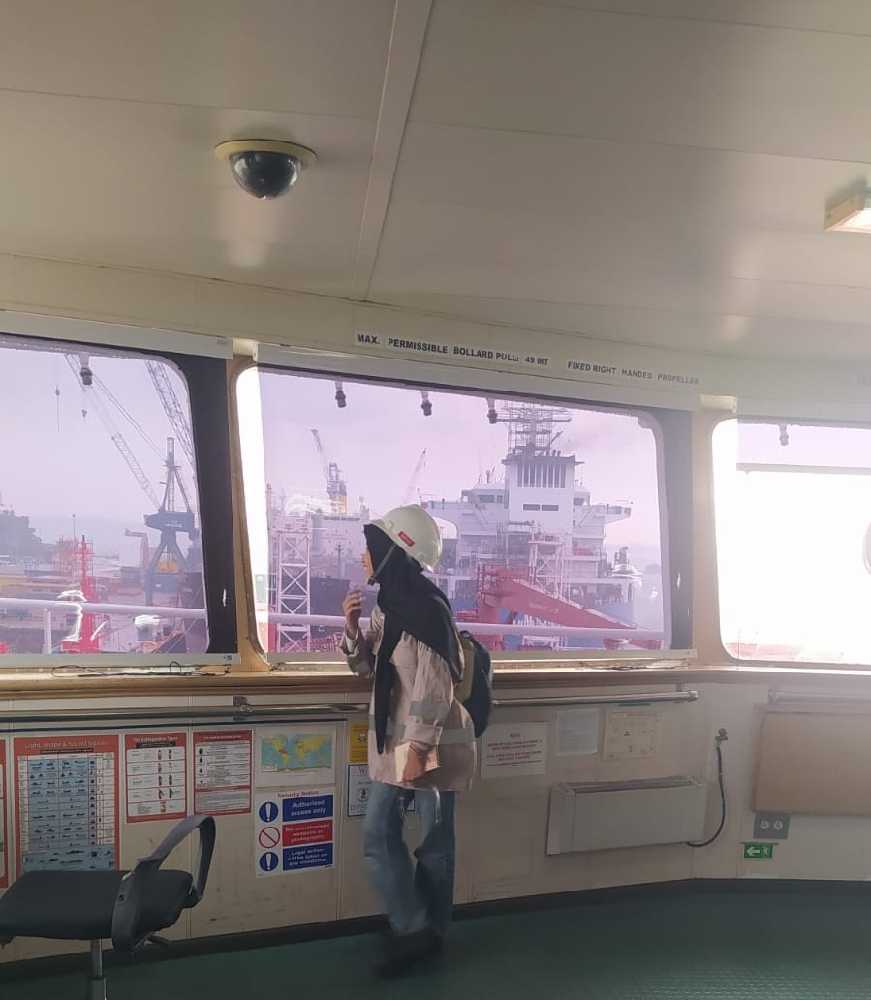
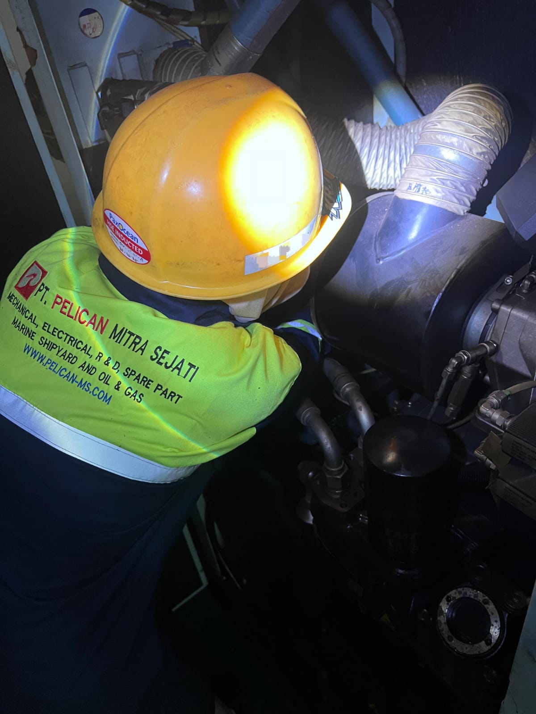

01 / PROFILE
ABOUT
LAILITA N.R
>>> AN ELECTRICAL ENGINEERING STUDENT «
Hi, I’m Lailita Nur Ramadhani, an Electrical Engineering student at Politeknik Negeri Batam currently working in the Automation Division at PT. Pelican Mitra Sejati. I specialize in electrical wiring, PLC/VSD assembly, instrument inspection, and E&I troubleshooting, alongside strong proficiency in Microsoft Office. Beyond technical work, my active role in the student association continues to sharpen my leadership and teamwork skills.


RF AREA
TEMPERATURE
MONITORING
MODULE ASSEMBLY
ELECTRONICS
MODULE FOR
MUSICAL
INSTRUMENT
EDUCATION
>>> ACADEMIC BACKGROUND
Politeknik Negeri Batam
Diploma (D3) Student in Electrical Engineering
During college, I developed hardware projects from scratch, including a Musical Instrument Module and an RF Area Temperature Module, handling everything from circuit tracing and PCB layout design to component mounting and finishing.
SMAN 23 BATAM
A Science (IPA) high school graduate with early exposure to electrical and automation fundamentals, as well as active involvement in school organizations.




03 / TECHNICAL WORK
Project >>>
01. Motor Starter Assembly:
Built DOL, Star-Delta, Star-Delta Forward-Reverse, and Auto-Transformer contactor control circuits from schematics.
02. PLC & Temperature Automation:
Wired and programmed PLC systems for automated temperature monitoring and control.
03. VSD & Modbus Integration:
Configured VSD parameters and operated motors via manual mode, contactor relays, and Modbus RS-485.
04. Remote Monitoring & Industrial Communication:
Developed Arduino-based remote monitoring and control programs (Arduino IDE, QModbus) to operate VSDs and induction motors via Modbus RTU, RS-485, and MOXA serial converters.
02 / EXPERIENCE «
Work
INSPECTION
PT. PELICAN MITRA SEJATI
MECHANICAL ELECTRICAL, R & D, SPARE PART — MARINE SHIPYARD AND OIL & GAS


MASA GUARDIAN
Synchrony - VSD to HMI
It was found that the control parameter values displayed on the monitoring system do not synchronize with the actual readings on the VSD panel.
PERDANA PROTECTOR
OIL MIXING VALVE (OMV) ERROR
Oil Mixing Valve (OMV) inspection revealed burned stepper motor windings and a burnt driver IC on its internal PCB.
GAZ DIAMOND
Marine Navigation & Communication Systems
Navigation & Positioning Systems, Marine Communication & Alarm Systems, Instrumentation & Panel Arrangement.